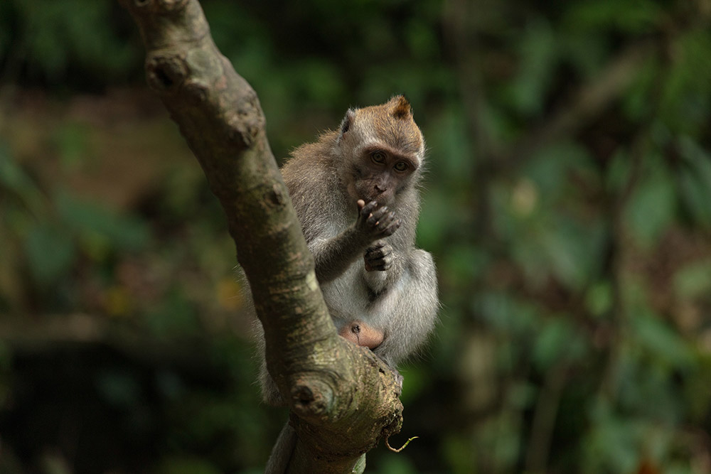

Bali —body, mind & soul
Jul 10 2019
The term bristlecone pine covers three species of pine tree (family Pinaceae, genus Pinus, subsection Balfourianae). All three species are long-lived and highly resilient to harsh weather and bad soils. One of the three species, Pinus longaeva, is among the longest-lived life forms on Earth. The oldest Pinus longaeva is more than 5,000 years old,[1] making it the oldest known individual of any species.

Despite their potential age and low reproductive rate, bristlecone pines, particularly Pinus longaeva, are usually a first-succession species, tending to occupy new open ground.[2] They generally compete poorly in less-than-harsh environments, making them hard to cultivate.[2] In gardens, they succumb quickly to root rot.[3] They do very well, however, where most other plants cannot even grow, such as in rocky dolomitic soils in areas with virtually no rainfall.[2]
Bristlecone pines grow in scattered subalpine groves at high altitude in arid regions of the Western United States. Bristlecones, along with all related species in class Pinopsida, are cone-bearing seed plants commonly known as conifers; the name comes from the prickles on the female cones.[4]